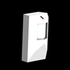

Di seguito sono elencate le fonti luminose disponibili nelle aule:
 Finestra
Finestra
Facilmente riconoscibili anche nell’oscurità, le finestre possono essere frantumate con una pallottola sparata dalla fionda o da un petardo. Una volta frantumata, la finestra getterà un fascio di luce lungo tutta la stanza. Le finestre non possono essere riparate, e la loro luce rimane nelle stanze puzzle per sempre. Le finestre non contribuiscono a riempire il Contatore Luce, siccome non richiedono elettricità.
 Lampada
Lampada
La lampada può essere accesa o spenta, e crea intorno a se un cerchio di luce di dimensioni medie. Ogni lampada deve essere accesa e spenta individualmente.
 Televisione
Televisione
La televisione non può essere accesa o spenta direttamente. Il giocatore deve invece trovare il telecomando della televisione per accenderla da lontano. La televisione crea una piccola sfera luminosa davanti allo schermo. Quando una stanza contiene più di una televisione, l’utilizzo del telecomando le fa funzionare in ciclo.
 Monitor del PC
Monitor del PC
Tutti i monitor sono collegati in rete. Accendendo o spegnendo un monitor si accendono o spengono tutti i monitor presenti in quell’aula. Per questo motivo, i monitor riempiono il Contatore Luce abbastanza velocemente. I monitor hanno anche la tendenza ad andare in corto circuito. Se la luce di un monitor comincia a tremare, il giocatore deve spostarsi, per evitare di trovarsi improvvisamente nell’oscurità. Solo un monitor alla volta può andare in corto circuito e, qualora dovesse succedere, il monitor si riaccende dopo pochi secondi.
 Luce Oscillante
Luce Oscillante
La luce oscillante funziona in maniera simile ad un ventilatore da tavolo oscillante. Ruota lentamente da lato a lato a velocità costante, fermandosi qualche secondo quando raggiunge il limite in ogni direzione, prima di ruotare nella direzione opposta. La luce oscillante crea un fascio di luce ampio, simile in forma a quello di una delle torce elettriche di Jake, che può essere utilizzato per attraversare l’aula. Quando una luce oscillante è spenta, ricomincia ad oscillare da quel punto, quando viene riaccesa.

Sensore di Movimento
Il sensore di movimento crea un enorme cerchio di luce sotto di esso ogni volta che Jake o un proiettile gli passano a qualche centimetro di distanza. Una volta attivata, la luce rimane accessa per 10 secondi prima di cominciare a spegnersi. Dopo che il sensore di movimento si spegne, può essere riattivato, ma la luce non può mai rimanere accesa per più di 10 secondi alla volta.